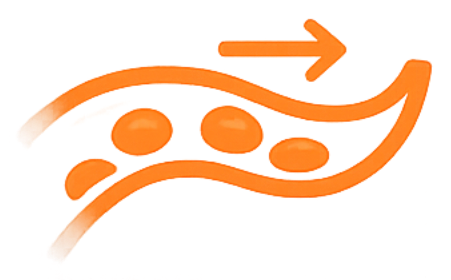
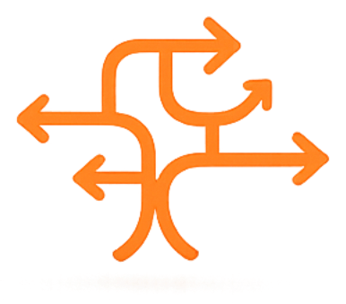

Zásobení buněk
Nejmenší cévy pomáhají přivádět kyslík a živiny do tkání a orgánů, kde jsou potřeba.
BEMER je neinvazivní terapie využívající pulzní elektromagnetické pole navržené pro podporu mikrocirkulace. Ta souvisí se zásobením buněk, regenerací, vitalitou a celkovou kondicí.
Proč začínáme mikrocirkulací
Mikrocirkulace označuje proudění krve v nejmenších cévách. Pomáhá zásobovat buňky kyslíkem a živinami a odvádět látky, které už tělo nepotřebuje. Když funguje správně, organismus má lepší podmínky pro regeneraci, vitalitu a běžné fungování.

Nejmenší cévy pomáhají přivádět kyslík a živiny do tkání a orgánů, kde jsou potřeba.

Mikrocirkulace podporuje výměnu látek mezi krví a tkáněmi. Díky tomu mají buňky lepší podmínky pro svou běžnou činnost.
Když je zásobení tkání dostatečné, organismus má lepší podmínky pro regeneraci, odolnost a každodenní fungování.
Praktická podpora mikrocirkulace
Mikrocirkulace ovlivňuje zásobení buněk kyslíkem, látkovou výměnu i regeneraci. BEMER do tohoto procesu vstupuje jako neinvazivní terapie využívající pulzní elektromagnetické pole navržené pro podporu mikrocirkulace.
Používá se vleže nebo vsedě na podložce, případně s lokálním aplikátorem. Terapie je nebolestivá, odpočinková a nastavení vždy přizpůsobíme vaší situaci.

S čím může terapie pomoci
BEMER se nejčastěji využívá jako doplňková podpora regenerace, vitality a celkové kondice. Při konzultaci společně projdeme, zda a jak může dávat smysl právě ve vaší situaci.
Podpora mikrocirkulace může přispět k lepším podmínkám pro zásobení tkání kyslíkem a živinami. To může být užitečné při únavě, zátěži i regeneraci.
Správně fungující mikrocirkulace podporuje přirozené procesy organismu. BEMER může být součástí péče o celkovou odolnost a zdravý životní styl.
Orgány i sliznice jsou závislé na jemném cévním zásobení. Podpora mikrocirkulace může vytvářet lepší podmínky pro jejich běžnou činnost a obnovu.
Při zátěži, úrazech nebo po operacích tělo potřebuje dobré podmínky pro regeneraci. BEMER může být podpůrným nástrojem v období obnovy.
Lidé BEMER často vyhledávají při zatížení zad, svalů nebo kloubů. Vhodné použití vždy záleží na konkrétní situaci a zdravotních omezeních.
U chronických nebo neurologických potíží je důležitý individuální přístup a respekt k lékařské péči. BEMER může sloužit jako doplňková podpora komfortu a regenerace.
Proč právě se mnou
Nejprve si společně ujasníme, co řešíte. Poté vám ukážu, jak BEMER používat doma bezpečně, srozumitelně a podle vašich potřeb.
Společně projdeme vaši situaci, očekávání a případná omezení. Vysvětlím vám, kde může být BEMER vhodnou podporou.
Pokud se rozhodnete terapii vyzkoušet, zapůjčím vám přístroj BEMER domů a ukážu vám doporučený režim používání.
Během zapůjčení nejste na vše sami. Podle potřeby doladíme používání, zodpovím otázky a budeme sledovat vaši reakci.
Po vyzkoušení se v klidu rozhodnete, zda vám BEMER dává smysl i dlouhodobě. Když budete chtít pokračovat, pomohu vám vybrat vhodné řešení.
Nejste si jistí, jestli je BEMER pro vás vhodný? Domluvte si nezávaznou konzultaci a společně projdeme vaši situaci.
Domluvit konzultaciReference
Zkrácené parafráze osobních zkušeností s BEMER terapií.
Časté otázky
Odpovědi na otázky, které lidé nejčastěji řeší před první konzultací nebo domácím vyzkoušením BEMER terapie.
BEMER využívá nízkofrekvenční pulzní elektromagnetické pole, které je navržené jako podpora mikrocirkulace. Terapie probíhá vleže nebo vsedě na aplikační podložce a jednotlivé aplikace obvykle trvají jen několik minut.
Mikrocirkulace je proudění krve v nejmenších cévách. Pomáhá zásobovat buňky kyslíkem a živinami a odvádět odpadní látky. Když funguje správně, tělo má lepší podmínky pro regeneraci i běžné fungování.
BEMER může být zajímavý pro lidi, kteří řeší regeneraci, únavu, sportovní zátěž, dlouhodobou péči o vitalitu nebo podporu zdravého životního stylu. Vhodnost se vždy posuzuje individuálně podle vaší situace.
Po konzultaci vám mohu přístroj zapůjčit domů. Ukážu vám základní nastavení, doporučený režim používání a během zapůjčení se můžete ozvat s dotazy nebo úpravou používání.
U zdravotních potíží je vždy důležité postupovat individuálně. BEMER nenahrazuje lékařskou péči ani stanovenou léčbu. Pokud řešíte konkrétní diagnózu nebo užíváte léky, doporučím vhodný postup konzultovat také s lékařem.
Ne. Konzultace je prostor pro vysvětlení, otázky a zjištění, jestli vám BEMER dává smysl. Cílem není tlak na rozhodnutí, ale srozumitelně vám ukázat možnosti a nechat vám prostor se rozhodnout.
Kontakt
Napište mi krátce, co řešíte, a společně se domluvíme na nezávazné konzultaci nebo možnosti domácího vyzkoušení.